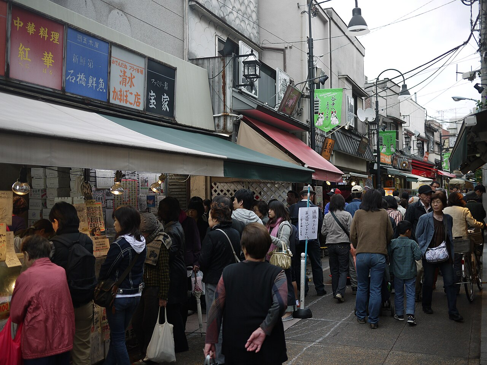

📷 Yoshikazu Takada · CC BY 2.0
Yanaka Ginza, en Yanesen
GratisCalle comercial de 170 metros y unas 60 tiendas, en uno de los pocos barrios de Tokio que sobrevivió a los bombardeos de la guerra: casas bajas de madera, tiendas de toda la vida.
💭 Es el "Tokio de antes" que ya casi no existe: sin rascacielos, sin neón, con gatos de verdad viviendo en la calle. Al final, la escalinata Yūyake Dandan ("la escalera del atardecer") mira al oeste. Hay siete gatos de madera escondidos por la calle — encontrarlos todos da buena suerte, dicen.
📍 Estación Nippori, salida norte